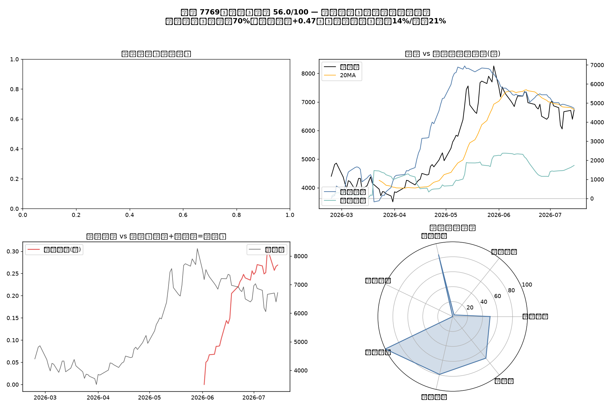
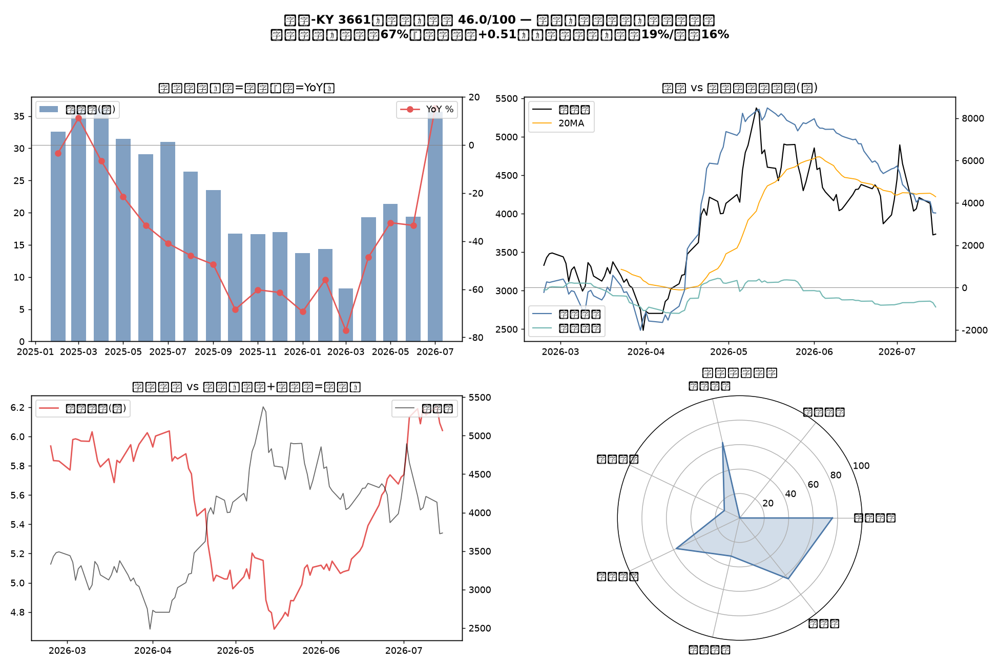
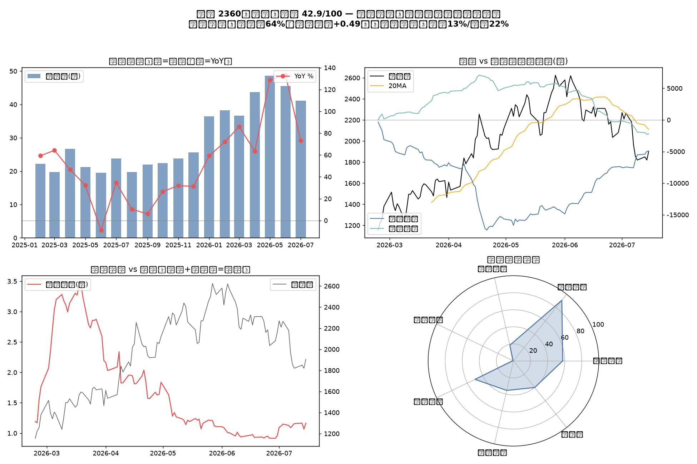
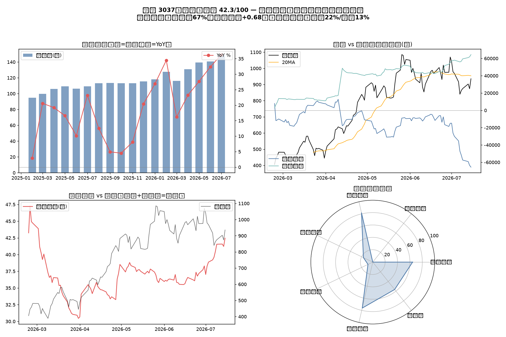

台股籌碼 / 基本面加權評分總覽
更新時間：2026-07-15 15:13（GitHub Actions 自動產生）
7769
鴻勁
上櫃
56.0
中性偏多：留意個別警訊項目
投信控盤（同向率70%、等級相關+0.47）
投信控盤（同向率70%、等級相關+0.47）。外資近5日賣超、投信買超，兩者對作（方向不一致），需觀察誰的影響力較大來判斷實際走勢
股價6720.0站上EMA21(6712.5)，高出0.1%，短線偏多
月線扣抵值7205.0偏高（現價低了6.7%），扣抵後月線恐走平或彎頭向下

3661
世芯-KY
上市
46.0
中性：多空拉鋸，等訊號明朗
投信控盤（同向率67%、等級相關+0.51）
投信控盤（同向率67%、等級相關+0.51）。外資與投信近5日同步賣超，方向一致，力道疊加
股價3735.0跌破EMA21(4179.4)，低了10.6%，短線偏空
月線扣抵值4250.0偏高（現價低了12.1%），扣抵後月線恐走平或彎頭向下

2360
致茂
上市
42.9
偏空警戒：籌碼鬆動或動能減速中
投信控盤（同向率64%、等級相關+0.49）
投信控盤（同向率64%、等級相關+0.49）。外資近5日買超、投信賣超，兩者對作（方向不一致），需觀察誰的影響力較大來判斷實際走勢
股價1905.0跌破EMA21(2079.1)，低了8.4%，短線偏空
月線扣抵值2265.0偏高（現價低了15.9%），扣抵後月線恐走平或彎頭向下

3037
欣興
上市
42.3
偏空警戒：籌碼鬆動或動能減速中
外資控盤（同向率67%、等級相關+0.68）
外資控盤（同向率67%、等級相關+0.68）。外資近5日賣超、投信買超，兩者對作（方向不一致），需觀察誰的影響力較大來判斷實際走勢
股價936.0站上EMA21(932.9)，高出0.3%，短線偏多
月線扣抵值960.0偏高（現價低了2.5%），扣抵後月線恐走平或彎頭向下

※ 本頁為公開資料之量化整理，控盤判定為統計推論，不構成投資建議。